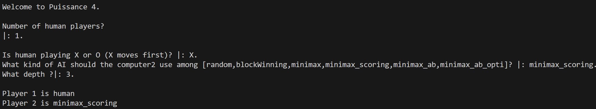
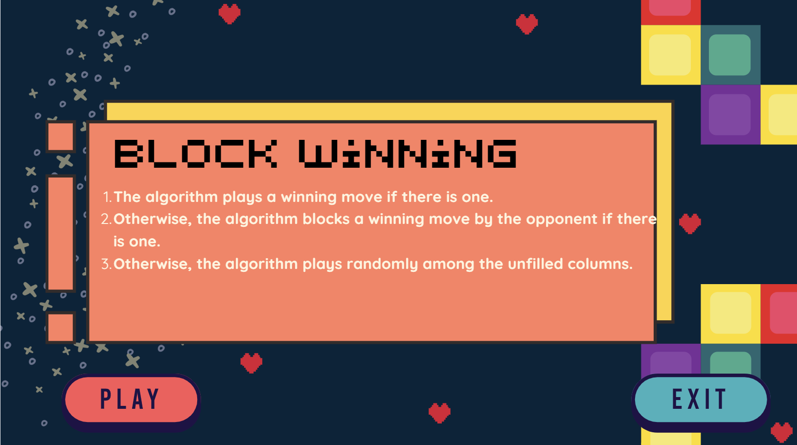
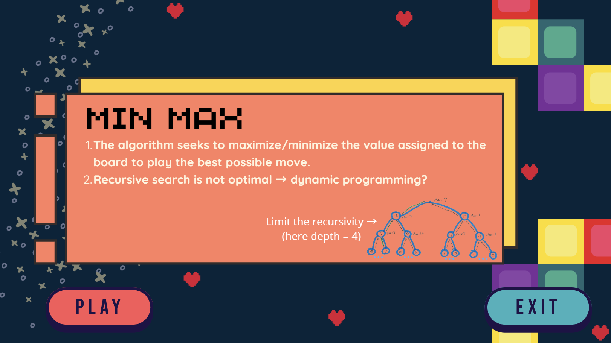
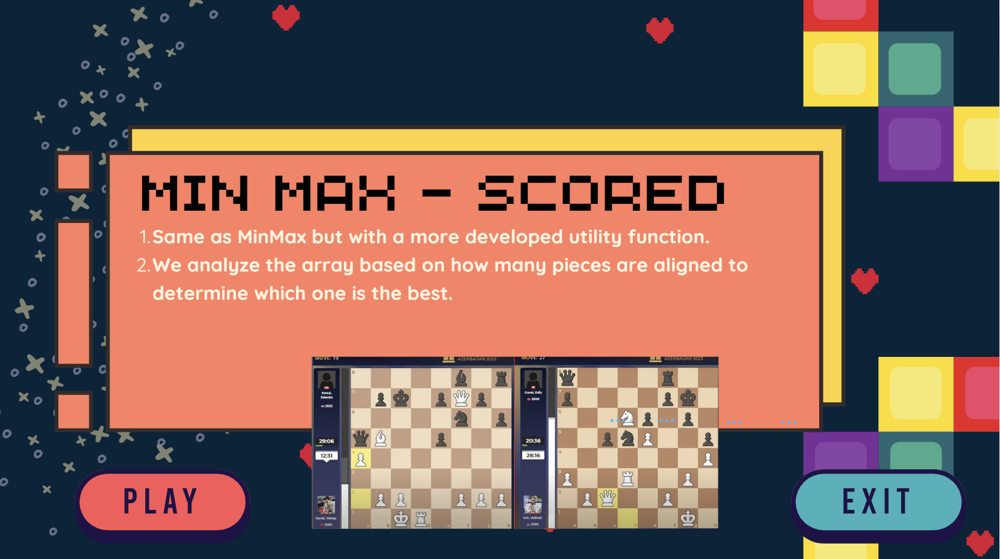
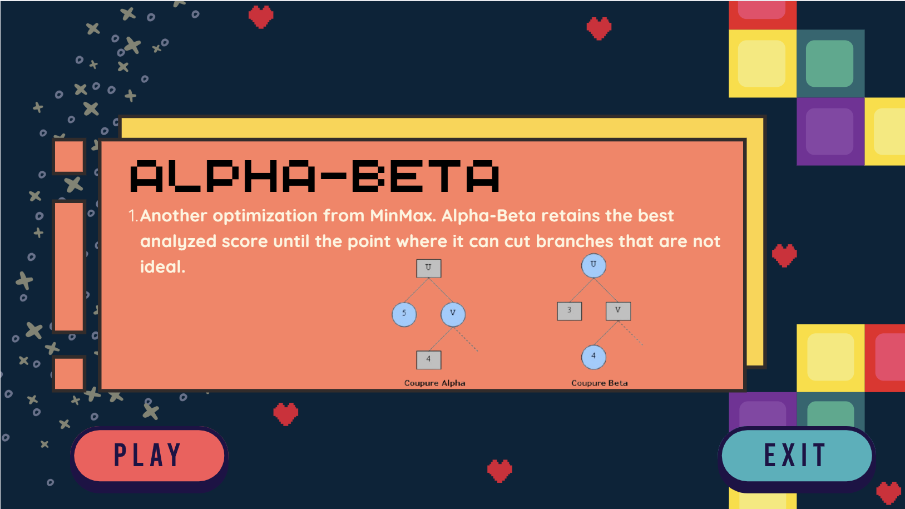

Connect4 bots

Declaratively programmed bot players for our childhood's boardgame. This project allowed us to discover Prolog's programming paradigm.
Here is an example of game :
We worked incrementally to implement several AI :




And since we could vary the number of human player (0, 1 or 2), we could have AI fights to know wich one was the more clever ! (spoiler alert : it's not always the one we would think...)
We tested our code with automated Prolog unit tests.